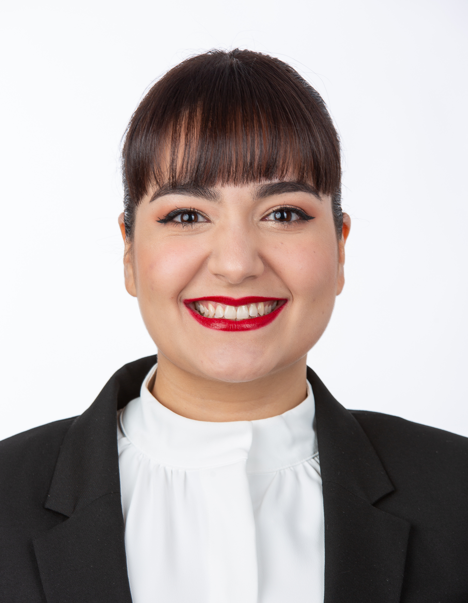

Maria Isabel De Andrade

Summary
Dynamic and professional flight attendant who likes to learn from my experiences and take the good side of every situation. I adapt very well to the environment where I am, moreover, I am very used to changes. One of the reasons I enjoy this bussiness is because of the opportunity it gives to connect with people. Regarding my professional skills, I have large experience in hospitality and customer service. In addition, I am someone reliable who loves teamwork and with a great organizational capacity.
Education
- Degree in Law. Falcon University Venezuela. 2015.
- Cabin Crew Attestation European Union. Crew School, International School of Aviation. 2020.
Work Experience
- Cabin Crew
Air Baltic, Riga, Latvia. 2023 - present
- Ensuring a high standard of service through willingness to assist and a positive reaction to customer needs at all times.
- Keeping customers informed of all in-flight details, especially during delays.
- Providing all necessary information at the pre-flight briefing and setting clear expectations of performance standards.
- Actively monitoring and participating in the in-flight service.
- Being approachable and providing assistance at all times.
- Ensuring the safety of the passengers during the whole flight.
- Cabin Crew
Wizz Air Malta, Venice, Italy. 2022 - 2023
- Demostrating the safety procedures, enforcing safety and security regulations.
- Greeting passengers, taking care of their needs, giving excellent customer service.
- Monitoring the cabin frequently during the flight.
- Assisting passengers with special needs.
- Maintaining composure in case of emergency.
- Commercial Agent
Anovo Iberica. Madrid, Spain. 2020 - 2022
- Customer service.
- Reception and handling of customer calls.
- Document management.
- Logistics and after-sales service.
Skills
- Excellent communication skills
- Teamwork-oriented
- Effective time management
- Positive attitude
- Adaptability
Languages
- Spanish: Mother tongue
- English: High level written and spoken
- Korean: Currently learning
Contact Me